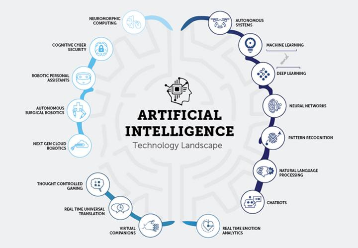

content:
How do we means if ArtificialIntelling
What is the turing test is ArtificialIntelling
The RationalAgent Approach
what is Artificial Intelligence?
arile Intelligence is defined as the ability of a digital computer or computer-controlle An Intelligent Entity Created By humans
Capable of Performing Tasks intelligently without being explicitly instructed.
Capable of thinking and acting rationally and humanely,A laymanwith a fleeting understanding of technology would link it to robots.
They’d say Artificial Intelligence is a terminator like-figure that can act and think on its own.
If you ask about artificial intelligence an AI researcher, (s)he would say that it’s a set of algorithms
that can produce results without having to be explicitly instructed to do so. The intelligence demonstrated by machines is known as Artificial Intell
How do we measure if Artificial Intelligence is acting like a human?
Even if we reach that state where an AI can behave as a human does,
how can we be sure it can continue to behave that way?
We can base the human-likeness of an AI entity on the:
- Turing Test
- The Cognitive Modelling Approach
- The Law of Thought Approach
- The Rational Agent Approach
What is the Turing Test in Artificial Intelligence?
The basis of the Turing Test is that the Artificial Intelligence entity should
be able to hold a conversation with a human agent. The human agent ideally should not be able
to conclude that they are talking to an Artificial Intelligence.To achieve these ends,
the AI needs to possess these qualities:
- Natural Language Processing to communicate successfully.
- Knowledge Representation acts as its memory.
- Automated Reasoning uses the stored information to answer questions and draw new conclusions.
- Machine Learning to detect patterns and adapt to new circumstances

Cognitive Modelling approach :
the name suggests, this approach tries to build an Artificial Intelligence model based on Human Cognition.
To distil the essence of the human mind, there are 3 approaches:
Introspection: observing our thoughts, and building a model based on that
Psychological Experiments: onducting experiments on humans and observing their behaviour
Brain Imaging:
Using MRI to observe how the brain functions in different scenarios and replicating that through code.
The Laws of Thought Approach
The Laws of Thought are a large list of logical statements that govern the operation of our mind.
The same laws can be codified and applied to artificial intelligence algorithms. The issue with this approach,is because solving a problem
in principle (strictly according to the laws of thought) and solving them in practice can be quite different, requiring contextual nuances to apply.
Also, there are some actions that we take without being 100% certain of an outcome that an algorithm might not be able to replicate if there are too many parameters.

The Rational Agent Approach:
A rational agent acts to achieve the best possible outcome in its present circumstances.
According to the Laws of Thought approach, an entity must behave according to the logical statements.
But there are some instances, where there is no logical right thing to do,
with multiple outcomes involving different outcomes and corresponding compromises.
The rational agent approach tries to make the best possible choice in the current circumstances.
It means that it’s a much more dynamic and adaptable agent.Now that we understand how Artificial Intelligence can be designed to act like a human,
let’s take a look at how these systems are built.
Metavers.page2
ArtificialIntelling(AI).page3
Robotics.page4
futureTechnology.page5